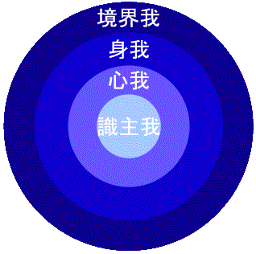

「私、わたし、ワタシ、」「私のもの、自分のもの」と言いながら生きるのが人生です。「私」と言いながらも自分を知らないで生きるのは残念なことですね。何が私なんでしょうか。なにが、正真正銘の私なのでしょうか。よくよく考えてみる必要のある主題ではないでしょうか。それなのに、この主題が、あまりにも無関心なままなおざりにされているようですが、どうしてでしょうか。
では、なにが「私」なのでしょう。この身体、あるいはこの心をもって「私」であると言えるでしょうか。だいたいそんなところで、“決着”してしまっているのが普通です。これまで長いこと「私だ」「私のだ」と限りなく繰り返して、骨までしみわたってしまった我執、法執を洗い流さないかぎり、解脱はありえません。
釈迦が示した解脱するための方法のひとつが「私」を正しく理解することです。「正しく」というのは科学的な厳正さを意味するのではなく、方法として、それにいかに真剣に取り組むかということを意味するものです。
「私」というものが何であるかを知ることが目的ではありません。「私」というものに対する執着があるがゆえに苦をこうむっている。だから、「私」というものをよく理解することで、「私」に対する執着から脱却することが目的です。つまり、執着を捨てるための方便として、私に対する正しい理解が必要になるのです。これが、知ることを目的とする学問と異なる点です。
さて、何が私なのでしょう。わたしが２０年にわたって開いている「同事摂」ワークショップで、ワークが極まってくると、「あなたは何ですか」「何が、本当のあなたですか」と、真剣かつ厳粛に問いかけるワークに取り組みます。「五右衛門です」「○○の親父です」「○○の夫です」「○○グループの社員です」「日本国民です」「身体です」「魂です」などなど、これというものがわんさと出てきます。ところが、答えて出したものが本当に私なのかと自問してみると、「あれこれ考えるに、それが私であるとはいえない。いったい、何が私なんだろう。」とさらに問わざるをえなくなります。
この主題に対して誠実に取り組んでいようとすると、だいたい“知ることができないという焦燥感”におそわれます。このような状態を密度高くしていくのが、禅の公案であり、この焦燥からの突破口を探して前進し、みずから満足できるような回答を得て修行していくのが念仏禅であり、法界観、一心三観などの行法です。
本当の私を探求するために、一般化してもよさそうな方便をひとつ紹介しましょう。本当の自分ではありえないと思えるものを次々と取り除いていく瞑想です。だいたい、普通の人が「私」というものを分析してみると、４層に分析できそうです。見たり、聞いたり、考えたりする認識の主体（識主我）。こころ（心我）。からだ（身我）。そして、自己同一視している“私のもの”（境界我）。図にすると次のようになります。

本当の私を探して、外側から「これは、はたして私だろうか。」と問い直してみましょう。タマネギの芯を求めて一枚いちまいはがしていくように ...。
境界我。私たちが知らず知らずのうちに自己と同一視して、執着している、身体の外側のものです。父母、兄弟、子供、夫、妻、財産、土地、大事な物、名誉権力などなど、大事な（?）私の境界我。それらが私でしょうか。そうでないなら、はなしてしまいましょう。抱え込むのをやめましょう。子供は親の手元から離したほうがよく育つともいいます。財産は離してしまったほうが、効果的に管理できます。
身我。これが私でしょうか。身体というのは、よく調べてみると、顕微鏡でしか見ることのできない父親の精子ひとつと、毎月母親の卵巣から出る卵子ひとつ、そして、母親が私を宿して１０ヵ月の間に食べたご飯やたくわん、私が生まれてからずうっととってきた食べ物、それらの集合が身体です。精子が私でしょうか。卵子が私でしょうか。ご飯やたくわんが私でしょうか。このようなものを「私だ」として、しがみついている人を見るとかわいそうになりまりませんか。身体。これ、私ではありません。放しなさい。明日、あさってにも火葬場で煙と一にぎりの骨になってしまうこの身体。放してしまいましょう。
心我。これが私でしょうか。心我とは思いと感情の組み合う過程に過ぎません。思考、感情、欲求、意志。これらが現象として繰り返し現れては消えていくのが心です。花いちりん見る（認知作用）、気分がいい（感情）、つんで持ち帰り花びんに生けたい（欲求）、つみ取ろう（意志）。日ごろ、心はこんなぐあいに活動しています。いったい、この思考が私なのでしょうか。違います。その瞬間に起こった思考現象にすぎません。感情、欲求、意志も同じことです。心というものも、よくよく考えてみるとなにか実体があるというものではなく、実体のない“機能”が乱舞するだけです。
識主我（認識の主体）。山が見える。何か見る主体があるから、それが「山を見る」のではないかと考えそうです。この考えが、アートマンという形而上学の概念を作り出しました。木があり、石があるのなら、それを創った者がいるのではないかという考えがブラーフマンという形而上学的な神を作り出しました。釈迦が歴史に書き記される意味は、その二つの形而上学的概念から抜け出したということにあります。
鳥のさえずりが聞こえる。そのさえずりを聞く何かがあるのか。ちがいます。主体的に役割を果たしているかのような機能があるだけで、主体自体は実際にはありません。アートマンとかブラーフマンと同じように、知ることも体験することもできない形而上学的概念を、想像の観念倉庫に設定しておこうというのは、思索が徹底されていない“信じ込み”心理です。信じ込んでしまうことにより、なんらかの欲求を成就し、安らかになろうという心が人間の信じ込み心理です。
この信じこみ心理が、人間にとって有益な道具になっていることも事実です。信じこみ心理がないと、橋を渡るたびに異状がないか点検しなければならず、人に合うたびに凶悪犯ではないかと用心しなければなりません。多くの宗教教理が信じ込み心理を前提にしています。解脱に至らないとしても、信じ込みによって得る功徳は非常に大きいものがあります。しかし、なんでも中道がよく、状況によるべきものです。なんでも信じないということも禁物であるが、なんでも信じ込んでしまうのも禁物です。世の中のほとんどの人が、あまりにも深く、こうむっている心理被害が一つのが“私は存在する”という信じ込みです。
“私は存在する”という信じ込み。これは人の成長過程で段階的には必要ですが、最終段階の成熟過程では、その堅い信じ込みを放してしまわなければなりません。釈迦が菩提樹の下で修行したのはまさにその過程でした。その当然かつ自明でもあるかにみえる「私」というものが、実際は縁起的機能にすぎないことを看破し、それまで引きずっていた不安、つまり一切苦厄がなくなってしまったのです。
それでは、最後まで“私”として残っている認識の主体である識主我も、私ではなく、単なる（実体のない）機能であることを照見したときに、どのようなことが起こるのでしょうか。それこそ、自由感であり、解放感、大慈大悲、あふれる生命力ではないでしょうか。「山は山であり、水は水である」、妙有、常楽我浄の四徳があふれるような状態ではないでしょうか。空と性と相が一如となって現前する阿弥陀仏の一心法界が、これであるということを瞑想の深みに応じて理解できることでしょう。
ひょっとして「なにか、気が抜けるようだ」と考えますか。そうかもしれませんね。老人ボケのしゅうとめを３０年にわたって看病した末に亡くなったのだが、なんともさみしく感じたとのことです。観念的に思索しないで、瞑想的に観照してみると、思索の過程で起きるある種の虚脱感は極めて一時的です。瞑想の深みと比例した充満感が感じられるはずです。「ああ、それじゃ、最後に体験するその自由感などが本当の私なんだな」と結論を下したくなりましたか。しかし、自由感などは絶えず流れているものなのです。その絶えず流れるものに、またしても名前をつけようとするものではありません。“真我”であろう“本当の私”であろう、名前を付けようとする“信じ込み”心理が働いている可能性があり、目覚めていなければなりません。
世の中で名人と呼ばれるようになるためにも、骨身を削る努力をします。解脱者という世間ごとを越えた名人になろうとしているのに、わずかの努力で到達できるでしょうか。釈迦の遺言に「なまけることなく、精進しなさい」とあります。この一言に込められた釈迦の切なる悲願と慈悲の心がどれほどのものであったか、思えば思うほど胸が熱くなります。南無阿弥陀仏。